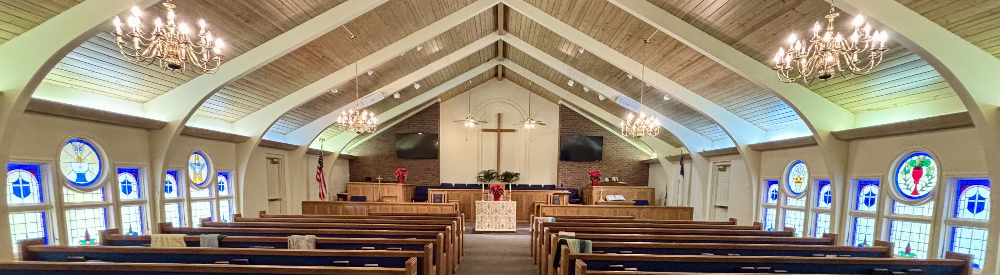

More Information
What to Expect in Our CREC Church
This guide provides helpful information about what you can expect when visiting Trinity Reformed Church and other churches in the Communion of Reformed Evangelical Churches (CREC).
If the PDF doesn't display above, you can download the PDF here or view it in a new tab.
About the CREC
The Communion of Reformed Evangelical Churches is a growing body of congregations spanning much of the world. This guide helps visitors understand the unique characteristics and worship practices of CREC congregations.
For more information about the CREC, visit the Communion of Reformed Evangelical Churches website.